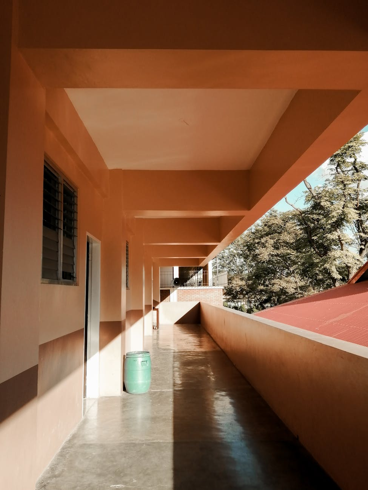

PeriStock
Toggle navigation
Explore
License
Collections
Join
Upload
The best free stock photos shared by talented creators
Trending:
Nature
Business
Technology
Travel
Food
Nature
People
Architecture
Technology
Business
Travel
Food
Animals
Sports
Education
Crizaldy Diverson
Jansel Ferma
Darren Lawrence
Med Gadon
Arthur Uzoagba
Nick Wehrli
Nothing Ahead
Rocky Evans Llona
Max Mishin
Joy Anne Pura
Aileen
Sharmaine Monticalbo
Pascal Ingelrest
Matthias Oben

Darren Tagao
Load More